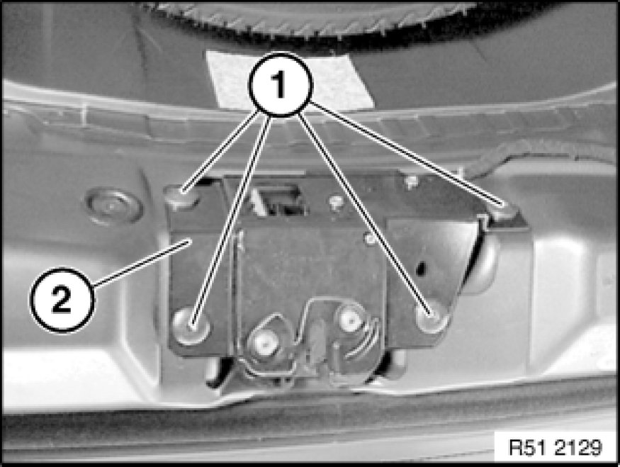
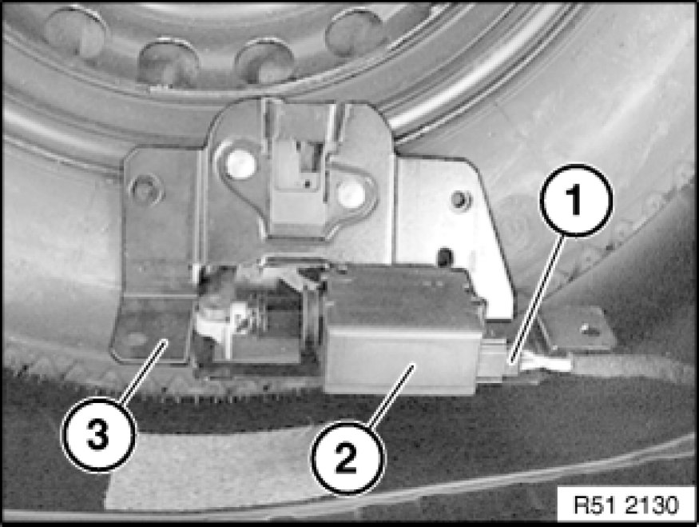
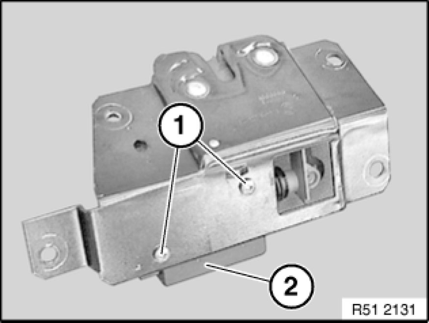
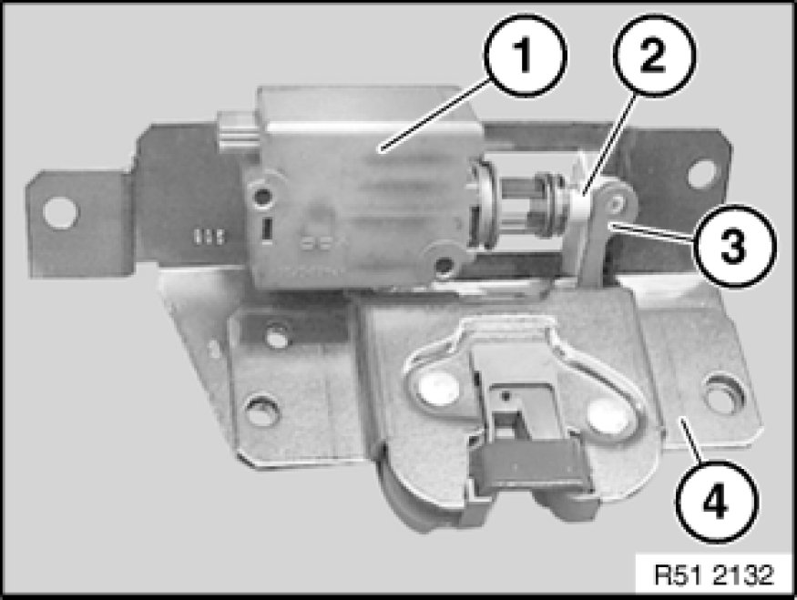
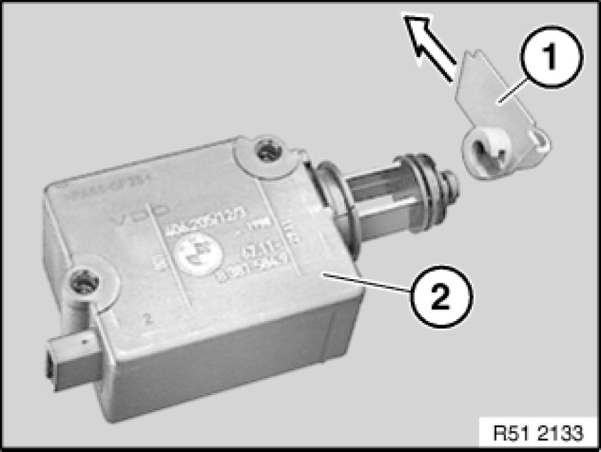

Trunk / Liftgate Latch: Service and Repair
51 24 105 - Removing and installing/replacing rear lid lock (lower section of lock)

Necessary preliminary tasks:
- Remove trim on tail panel 51 46 050 Removing and Installing/Replacing Top Trim on Rear Apron

Installation:
Mark position of lower section of rear lid lock on tail panel.
Release screws (1) on lower section of lock (2).

Disconnect plug connection (1) on actuator drive (2) and remove lower section of lock (3).

Replacement:
Release screws (1) for actuator drive (2).

Remove emergency release mechanism (2) of actuator drive (1) from mount (3) on rear lid lock (4).

Only if replacing actuator drive:
Detach emergency release lever (1) from actuator drive (2).